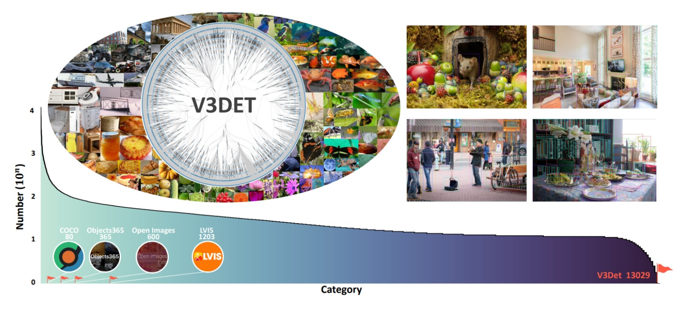

😊Dataset|💻Github|📖Paper|📄arXiv
This challenge offers participants an automated submission and evaluation system, along with a leaderboard, to submit your model's test results on the test set.
The V3Det Challenge 2024 - Vast Vocabulary Visual Detection invites visual recognition enthusiasts and experts worldwide to reshape the field of object detection using our revolutionary V3Det dataset. This dataset not only encompasses objects from 13,204 categories, ten times the size of existing large vocabulary object detection datasets, but also emphasizes the hierarchical and interrelated nature of categories, providing an ideal testbed for research in extensive and open vocabulary object detection. The rich annotations of V3Det, meticulously provided by human experts, ensure high precision and in-depth interpretation of the data. By participating in this challenge, you will not only have the opportunity to showcase your technical prowess but also contribute to the future development of the field of object detection.
We introduce V3Det, a vast vocabulary visual detection dataset meticulously crafted to advance the field of general visual object detection. This dataset addresses the challenge of detecting arbitrary objects in real-world scenarios, where traditional object detection datasets are often limited by their relatively restricted vocabulary.
V3Det stands out with its extensive range of features:
Vast Vocabulary: It encompasses bounding boxes for objects across 13,204 categories in real-world images. This scale is ten times larger than any existing large vocabulary object detection dataset, like LVIS, setting a new benchmark in dataset size and diversity.
Hierarchical Category Organization: The categories in V3Det are thoughtfully arranged in a hierarchical category tree. This structure not only delineates the inclusion relationships among different categories but also fosters an exploration into the complex interconnections and relationships within vast and open vocabulary object detection scenarios.
Rich Annotations: The dataset includes 243k images, each precisely annotated with bounding boxes to ensure accurate object identification and localization. Furthermore, V3Det offers professional descriptions for each category, crafted by human experts. This level of detail aids significantly in the interpretation and understanding of the dataset.
V3Det is more than just a dataset; it’s an exploration space that allows for comprehensive benchmarks in both vast and open vocabulary object detection. It’s poised to yield new observations, practices, and insights, thereby contributing to future research in the field. With its expansive scope and detailed annotations, V3Det is uniquely positioned to be a cornerstone dataset for the development of more generalized visual perception systems.